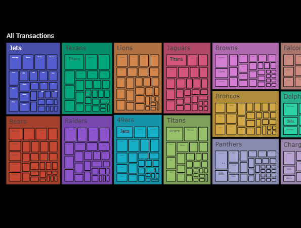
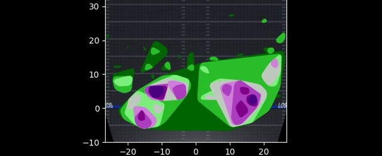
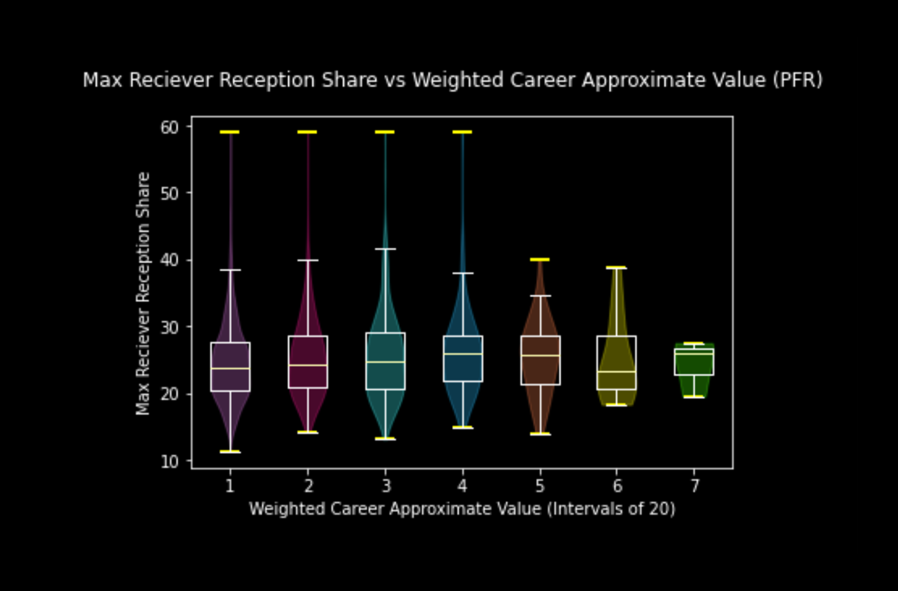

Matthew Sherman
Home
Projects
Resume
Email Me
Projects
Site 1.0
HTML • CSS • Javascript
Rome wasn't built in a day, and neither was this beautiful website.
Mock Draft Competition
Project Management • Organization
A friendly mock draft game.

Transactions Tracker
Database Merging • App Making • Interactive Plotting
Track the NFL's player movement; cheat at the Immaculate Grid.

Sprawlball NFL
Data Visualization • Image Scraping • GIS
Utilizing Geographical Information Systems for the football's benefit.
Quarterback Consistency
Creativity • Data Management • Data Analysis
A new statistic answers an age old question.

A New Form of Scouting
Data Cleaning • Causation • Violin Graphs
Scouting quarterbacks by scouting their wide receivers.
The Data Science of QBs
Large Data • Heatmaps • Histograms
A conglomerate of data, all about the quarterback position.